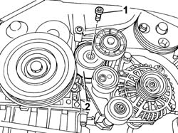
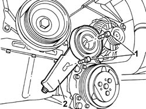

1092G15 ENGINE COMPONENT SINGLE BELT MOBILE TEMPERATURE - R RWITH BELT REMOVED
- Path
- Procedures > 10 ENGINE UNIT > 1092 VARIOUS ENGINE COMPONENT CONTROLS > 1092G SINGLE DRIVE BELT FOR VARIOUS ENGINE COMPONENTS > 1092G15 ENGINE COMPONENT SINGLE BELT MOBILE TEMPERATURE - R RWITH BELT REMOVED
- Kind
- repair procedure (removal / refitting; the operation number is the code)
- Applies to
- engines: 2.0 16V, 2.0 JTD 8V; all production periods
- Interactive page
- https://sloeber94.github.io/elrnDB-fDct/en/#/244000995
Applies to: engines: 2.0 JTD 8V; all production periods
 Removing
Removing
 Refitting
Refitting1. Undo the fixing bolt.
2. Remove the single belt moving tensioner.

Applies to: engines: 2.0 JTD 8V; all production periods
Refitting
Removing- Fit the auxiliary shaft drive belt moving tensioner.
- Tighten the fixing bolts to torque.
Applies to: engines: 2.0 16V; all production periods
Removing
Refitting1. Undo the bolts fixing the belt tensioner.
2. Remove the engine components belt tensioner.

Applies to: engines: 2.0 16V; all production periods
Refitting
Removing- Fit the engine components belt tensioner and tighten the fixing bolts to the recommended torque.